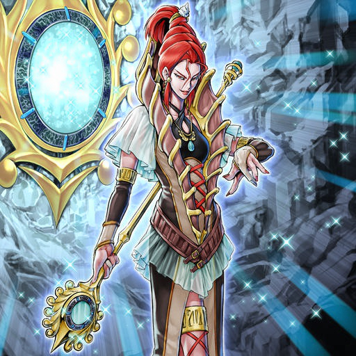

These creatures, known as the "Worms", come from organic matter that clings to meteorites. They mutate to evolve and fit their environment, and then multiply. They are invasive lifeforms that consume and exhaust planets throughout the cosmos.
The tribes lacked information about the true nature of the "Worms", so they gathered large forces similar to army ants to fight the invaders. Each tribe was forced to reach a truce, and each began to fight the "Worms" in its own way.
To deal with the army of "Worms" covering the world, the "Ice Barrier" unleashed one of their sealed ice dragons, whose chilling aura pushed the invaders back.
As for the non-"Ice Barrier" tribes: they dispatched powerful figures among their ranks to fight against the "Worms". They each displayed their power by making mincemeat of the gathered "Worm" forces, slicing them to pieces and burning them to ash.
The various assaults that rained down on the "Worms" became the external stimulus that caused them to evolve in various ways, which resulted in the emergence of new beings that had adapted to deal with the attacks they'd suffered.
As a result of the invasion, entire tribes began to die out, and the remaining tribes gathered and held a conference. They realized that they couldn't each oppose the invaders alone, and decided to join forces. Thus, the alliance, "Ally of Justice", was formed. It was headed by the four main tribes that had the most influence on the continent, and it began developing and producing Anti-"Worm" Weapons.
"Catastor" was built by a complete and perfect cooperation between the four tribes. It reaped major gains on the battlefield every time it was deployed.
Around this time, the "Ally of Justice" engineers confirmed the existence of the "Genex". Although their precise purpose was unknown, the "Genex" were observed to be silent creatures who seemed to have the ability to improve the environment around them. When they encountered the "Worms", they recognized them as outside invaders who polluted and destroyed the environment, so they began to eliminate them. Meanwhile, the "Allies" launched an investigation into the "Genex's" true nature...
"Controller" allows the other "Genex" to reveal their full power through its ability to combine its Central Control Core with them.

After many battles against the "Worms", the "X-Sabers" were injured. "Gottoms", their leader at the time, chose the next generation of swordsmen, the "XX-Sabers", and headed off to the battlefield once again.
Every time the "Worms" fought, their surviving members kept evolving, and ultimately, individuals with high levels of intelligence appeared. They gathered as a group and started commanding the lower-level "Worms".
The "X-Sabers" fought bitterly against the "Worms", who outnumbered them. "Pashuul" lost parts of his body in battle, but he replaced them with artificial limbs and returned to the battlefield despite his wounds.
The next generation of "X-Sabers", with "Gottoms" continuing to serve as leader. Using feedback from the various improvements to the "Ally of Justice", each of the members put on equipment with mechanical functions.
As the days passed, the conflict spread across the entire continent, and the intensity of the "Worm" attacks increased. Their slimy claws finally reached the peaceful "Naturia", who joined together to match the power of the invaders and protect their home.

The "Naturia" tribe is fundamentally pacifist, but they could not overlook the "Worm" invasion that polluted their beautiful forest, so they confronted them bravely without a single member stepping back in fear.
The warriors see a valiant figure towering over the battlefield, shining in their hopeful eyes: "Field Marshal". But it had been severely damaged on the way to the battlefield by a great number of "Worms", so it was deemed beyond repair, and was abandoned.
Since the existing technology of the "Allies of Justice" wasn't enough to create a control system for their large weapon, they captured "Genex Spare" and used it as their Central Control Core.
The technicians of the "Allies of Justice" investigated the meteorite that came from the "Worm" home star system, and they discovered an unknown substance in it which they used to complete the "Ally Mind". Experimentally equipping it allowed the computing power of the "Allies of Justice" to rise by leaps and bounds.
Although it couldn't be miniaturized with the technology available to the "Allies of Justice", it managed to increase weapon performance with its high Tuning ability.
The "Allies" began to mass-produce weapons for the purpose of capturing "Worms" rather than killing them.
The "Mist Valley" tribe had small doubts about the Allies' policy of taking advantage of the voiceless "Genex", since they weren't enemies. These feelings were tiny at first, but the "Fabled" amplified them into a great distrust for the rest of the alliance. As a result, "Mist Valley" left the "Allies of Justice", all according to the schemes of the "Fabled".
At the same time, the "Allies" began developing the "Cosmic Gateway", but the development was rough, as they were unable to get the machine to produce the proper output.
Perhaps they were awakened by the mayhem on the surface, or perhaps by the Allies' dimensional interference experiments—either way, the "Fabled", who had been sleeping since time immemorial, awoke and led their minions to the surface world.
The philosophy of the "Fabled" is, 'be faithful to your desires'. In accordance with that ideal, these evil gods refuse to aid the tribes, only bothering to interfere in the surface-dwellers' fights when it suits their own enjoyment.
The "Genex" began to repair themselves and optimize their designs toward a more combat-oriented style. Meanwhile, "Fabled Leviathan" appeared on the planet's surface...
The awakened "Fabled" appeared in the "Jurrac" nest's vicinity and attacked it. "Worm" invasions were relatively rare there, so the "Jurrac" were able to join forces and fight back.
The "Fabled" found the counterattack of the "Jurrac" to be stronger than they expected, and realized their prey was more formidable than they'd imagined, which made them smile with joy.
At this time, the engineers of the "Allies of Justice" started intervening in the evolution of the "Genex". The proud "Jurrac" clan refused to let themselves become the hunted, and they fought back together against the "Fabled" with everything they had. The flames that clothed their bodies became fires of unity with their comrades; and with them, they burned the "Fabled", who had become the hunters, to ash.
In order to make a new energy source for the "Allies of Justice", the AoJ engineers implanted the Real Fusion Reactor into certain "Genex" monsters, which evolved into "R-Genex".
On top of the "Worms", the "Fabled" became a new enemy, turning the surface world into a pot of chaos. In order to stop the vast army of "Worms", who continued to march day and night, and to counter the threat of the elusive "Fabled", the "Ice Barrier" freed the second Ice Dragon.
With its body freed from the seal, "Gungnir" began to dance across the battlefield as if trembling with joy. Its breath turned the invaders and wicked gods into immobile ice sculptures.
After leaving the "Allies of Justice", the "Mist Valley" fought on their own. However, the strongest weapon in their arsenal was the lone "Mist Wurm", and when it was defeated, it seemed like their troops would be completely routed—and that was when the legendary dragon knights rode in to the rescue.
The "Dragunity", whose existence was partially considered a legend, are said to dwell in the "Dragon Ravine". They are a tribe that has handed down a method of unifying with their dragons, in body and soul, known as "Dragon Mastery". This allows them to become "Dragunity Knights" who ride through the air.
As the "Worm" invasion became strangely and increasingly sporadic, the "Allies of Justice" began constructing their ultimate weapon in preparation for the final battle. At the same time, they wound down production of their other weapons, and focused instead on creating other tools.
The ultimate weapon was to be their ace in the hole, and as they constructed it, the "Allies of Justice" developed reconnaissance units mounted with monitoring equipment that was designed to predict where "Worms" would appear. When they completed the final weapon, they used "Genex Controller" as its Central Control Core.
As they'd anticipated, an ominous and terrifying "Worm" appeared that was incomparable with any that they had encountered up to that point.
Space tore apart, and from it, despair emerged. "Zero" increased its power by absorbing its "Worm" kin, and then it created a new army. Everywhere it went was tainted and turned into dead earth.
An enormous floating fortress, constructed to have the greatest firepower known to the planet, was lying in wait for the enemy's appearance. At the end of the fierce battle, in which the weapon and "Zero" attacked each other at the same time, the "Worms" were eradicated.
For a brief moment, the tribes cheered excitedly as the world was finally rid of the "Worms". But the "Fabled" had been watching the final battle from the sidelines; and now, accompanied by "The Fabled" beasts, they made their move to conquer the world's surface.
The seemingly endless conflicts that ravaged the surface world gradually wore down the boundary between it and the "Fabled" Realm, eventually causing that boundary to disappear completely. "The Fabled", serving as the "Fabled" Army's vanguard, began pouring quietly out of the "Fabled" Realm and threatening the tribes with their paranormal powers.
With the "Fabled" as their enemies, the "Ally of Justice" Weapon Series was no longer good enough, so their engineers began a military-focused conversion project on the "Genex": a new version of their ongoing "Genex" Weaponization Plan. For the sake of their plans, the "Allies" asked "Mist Valley" to cooperate with them once again. "Mist Valley" agreed and sent its engineers, and the plan succeeded and resulted in the creation of the "Genex Allies".
They took their old "Ally of Justice" machines... They repaired the "Genex" and installed them as Central Control Cores... They equipped the "R-Genex" with new power reactors... Thus, the "Genex Ally" series was created.
The engineers of the "Ally of Justice" tribes advanced their own designs based on some basic specifications, resulting in "Genex Allies" that reflected each of their strengths. Moreover, they offered each other the technology they developed in the process, and ended up pushing forward in pursuit of joint development.
A "Genex Ally" developed by the "Ice Barrier" and "Mist Valley". It possesses a power reactor based on the "R-Genex" that's both compact and high powered.
A "Genex Ally" developed soon after "Triarm", by the joint efforts of the "XX-Sabers" and the "Flamvell". The weapon equipped on its right arm can rotate, allowing it to adjust to situations on the fly. The "Allies" sent "Triarm" and "Triforce" to the front lines, one after the other.
The "Fabled" assault against the "Jurrac" reached its peak. With each passing day, the "Jurrac" lost more and more energy, and the number of flames was reduced to half of what it was before the "Fabled" made their surprise attack. If things kept going that way, they would have been destroyed, so the "Jurrac" made one final counterattack.
The remaining "Jurrac" clustered and transformed their bodies into a giant blazing meteor that fell on their own nest. The fire and impact turned the entire area, as far as the eye could see, into a sea of flames. The "Fabled" were reduced to ashes along with the nest, and from the fire-scorched remains, the "Neo Flamvell" were born.
The "Fabled" in the Jurrac nest who weren't obliterated by the impact started to flee, every man for himself.
The hearts of the "Jurrac" who lost their bodies became a part of the flames themselves, reincarnating as "Neo Flamvell". The fire tribe's thoughts awakened an ancient deity of fire and flames which existed in a mythical age. "Ancient Flamvell Deity", who had slept for eons, responded to the fire tribe's wishes and used its power to immolate the "Fabled" left in the "Jurrac" nest until not even ashes were left.

Many of the "Fabled" were wiped out, but the remaining groups only intensified their attacks across the world. The seemingly endless conflict laid waste to the surface world and pushed its people into impoverishment and exhaustion. Having been driven to such a point, one faction among the "Ice Barrier" proposed releasing the third Ice Dragon. The "Ice Barrier" tribe was internally divided over the matter, but they ultimately unleashed the dragon.
Powerful individuals among the "Ice Barrier" gathered, and carefully shattered the seal one piece at a time. The rituals and procedures continued, day and night over a month, until the entire seal was broken.
The power of "Trishula" was terrifying and dreadful, and it destroyed all the "Fabled" on the planet. However, the "Ice Barrier" lost control of the beast, and it went into a furious rage—and the other dragons, as if in response, rampaged with it. They took every possible measure to reseal the dragons.

In the unlikely event that the Ice Dragons went on a rampage, "Dewloren" was to serve as a safety device, but the Tiger King's power didn't match that of the three rampaging Ice Dragons, and it couldn't stop the madness and frenzy.
During the "Ice Barrier" tribe's dispute over whether or not to release the Ice Dragons, two mages and childhood friends considered alternative options. There was "Natalia", whose family sided with releasing the dragons, and "Noellia", whose family opposed releasing the dragons. Both of them sought to find something else to use in place of "Trishula".
The two had their eyes on demons called "Steelswarm", which had been sealed since ancient times, as a means to defeat the "Fabled". They attempted a Demon-Summoning Technique derived from mystical arts handed down to members of the "Ice Barrier" through the generations. Their plan was to summon the demons and enslave them.
The Summoning Ritual failed, as the two were unable to control the unexpected might of the "Steelswarm", and "Natalia" lost her life. The failure of the Ritual cost "Noellia" her best friend and contaminated her mind with the thoughts of the "Steelswarm".
"Gishki Natalia" A mage who was the childhood friend of "Noellia" and the mother of "Gishki Avance". The regret of dying and leaving behind her young son caused her thoughts and spirit to remain in the living world.
As the three dragons began to rampage out of control, the spectral entity, "Sacred Spirit", which had been watching over the "Ice Barrier" for generations, used a Sealing Technique at the cost of his being, and successfully sealed all three dragons at the same time.
Long ago, the three dragons who ran rampant among the snowy mountains were sealed with a special method involving the "Mirror of the Ice Barrier". The "Prior" founded the "Ice Barrier" then, and his soul transcended to become the "Sacred Spirit".

At the end of the war against the "Fabled", "Noellia" adopted several of the children of her "Ice Barrier" comrades who died in the war. Among them was "Avance", the son of "Natalia".
After ensuring the safety of several children from the "Gusto" clan, "Noellia" sent them home to the clan's village.
"Noellia", who was being slowly corrupted by the thoughts and feelings of the "Steelswarm", changed into a completely different person, and began research into theretofore forbidden rituals. Once she completed her research, she began to educate the children she'd adopted, as practitioners of the method. She broke off from the "Ice Barrier", taking with her their sacred artifact, the "Mirror of the Ice Barrier". Thus began the Society of Forbidden Arts, "Gishki".
After "Noellia" finished modifying the "Mirror of the Ice Barrier", it became an artifact for controlling all sorts of rituals.
